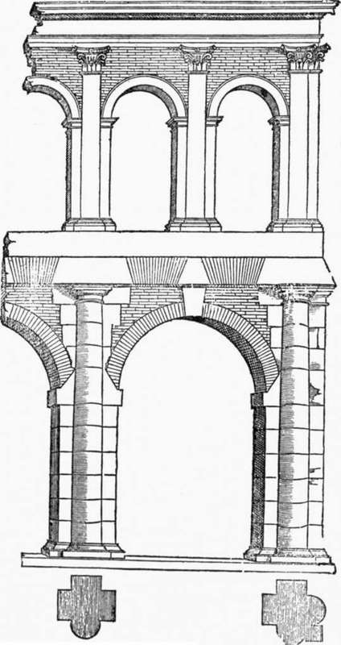
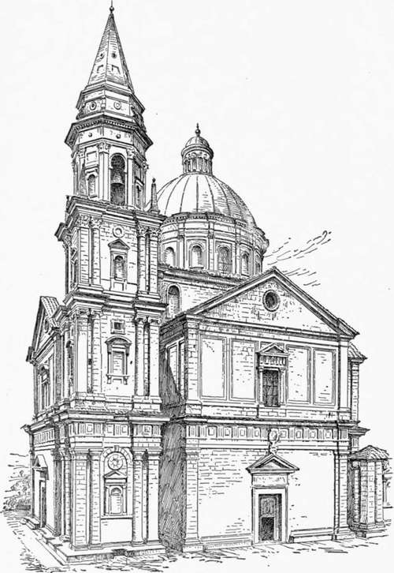
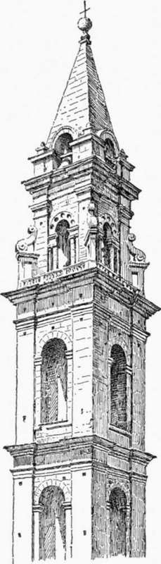

Church Architecture Of The Roman Renaissance. Part 4
Description
This section is from the book "Character Of Renaissance Architecture", by Charles Herbert Moore. Also available from Amazon: Character of Renaissance Architecture.
Church Architecture Of The Roman Renaissance. Part 4
The use of pilasters on the angles makes the awkward combination of a pilaster coupled with a column necessary, and since the entablature is in the plane of the wall, it has to be broken into very salient ressauts in order to cover these members. Above the entablature is a low ledge in retreat, broken into ressauts in conformity with those of the entablature, and from these ressauts coffered archivolts are sprung under the ends of the barrel vaults which cover the arms of the cross. The Doric order is designed here, for the most part, in close conformity to ancient models, save for the pilaster on the angle, which does not generally occur in Roman monuments. The common Roman treatment of the angle is shown in the arch of Septimius [Severus (Fig. 20, p. 41), where the end column of the order is placed at some distance from the end of the facade, which is left in retreat without any pilaster. But Serlio1 describes the ruins of an ancient Roman building (Fig. 39) that appears to have been a sort of open arcade or stoa, used as a meeting place for merchants, on the angles of which pilasters are set to-getherwith columns, somewhat as they were by Alberti in Santa Maria Novella, by San Gallo here in San Biagio, and by many other architects of the Renaissance. He speaks of the treatment of the angles of this building as follows: "The corner pilasters are larger than the others, and were truly made with excellent judgment, for they strengthen the angle with good effect; and from this architects may learn how to design angles with columns and pilasters bound together, in order that the corner may be brought into line with the column, which gives more solidity to the angle. If the said angle were withdrawn into line with the middle pilasters, the facade, when viewed obliquely, with the round column on the angle, would appear imperfect, and for this ... I strongly commend this form of angle because it may be fully seen from all sides."
1 Bk. 3, p. 54.
Fig. 39.
Externally the composition is remarkably good in its larger features (Fig. 40). The dome, of slightly pointed outline, on a high drum, rises grandly from the substructure, and is well proportioned in relation to it. The wall surfaces are treated broadly, with no orders carried across them. They are divided into two stages, with a pediment over each facade. Superimposed pilasters are set on the angles, and a Doric entablature, carried across the whole front, with ressauts over the lower pilasters, divides the two stages. The wall of the lower stage is entirely plain, with a severely simple rectangular portal surmounted by a pediment. The wall of the upper stage is divided into rectangular panels, as in the attic of the Pazzi chapel in Florence, the central panel being pierced with a square-headed window and framed with an order of which the capitals are Ionic and the entablature Doric. The cornice of the top story and the raking cornice of the pediment of each facade are broken into ressauts over the pilasters, and an order of Ionic pilasters, with a very high entablature broken into ressauts, surrounds the drum which supports the dome. Square detached towers are set in the reentrant angles of the west side, only one of which was carried to completion. The completed one is in three stages, each adorned with a heavy order, Doric, Ionic, and Corinthian respectively. In these orders half-columns are coupled with angle pilasters, as in the interior, and the entablatures have ressauts on the angles over these members. An octagonal spire-like lantern, with a tall drum adorned with an order of Corinthian pilasters and surmounted by an attic, crowns the tower. Small obelisks set on the tower angles and reversed consoles against the angles of the attic give a simulation of Gothic form to the neo-classic scheme, and show the strong hold that mediaeval ideas still retained upon the minds of the designers. The first of these spirelike towers of the Renaissance appears to be that of the church of Santo Spirito in Florence, which is spoken of by Milizia as the most beautiful of Italian bell towers.1 It was designed by Baccio d' Agnolo, who, beginning as a wood carver, imbibed the new enthusiasm for the antique, and after studying the ancient monuments of Rome1 began the practice of architecture. This campanile is thus noteworthy as the first of a large class of modern towers with spires of which Wren's famous steeples were the ultimate outcome. The scheme is based on the mediaeval campanile, the earliest form of which is the Lombard Romanesque tower. The Lombard tower is characterized by its simple rectangular outline, the walls rising sheer from the ground to the cornice, and strengthened and adorned with shallow pilaster-strips, corbelled string-courses marking the successive stories, and by small grouped openings. The tower of Santa Maria Novella in Florence is designed on this model, and the neighbouring tower of Prato and Giotto's famous campanile are later and richer modifications of the same type. In the tower of Santo Spirito (Fig. 41) Baccio d' Agnolo has taken the Lombard scheme and clothed it with a pseudo-classic dress. While his classic details have much of that elegance which belongs to the best Italian work, they are out of place in such a structure. The tall pilaster-strips of the mediaeval tower gave an expression as of an organic skeleton running through the building. They had been developed out of the classic pilaster to meet the needs of the mediaeval type of structure, and in substituting the superimposed classic orders for the appropriate continuous members, the artist did violence to the true principles of design.
Fig. 40.— San Biagio, Montepulciano.
1 Op. cit., vol. 2, p. 240.
1 Op. cit., vol. 2, p. 239.
Fig. 41. —Tower of Santo Spirito.
Continue to:
- prev: Church Architecture Of The Roman Renaissance. Part 3
- Table of Contents
- next: Church Architecture Of The Roman Renaissance. Part 5